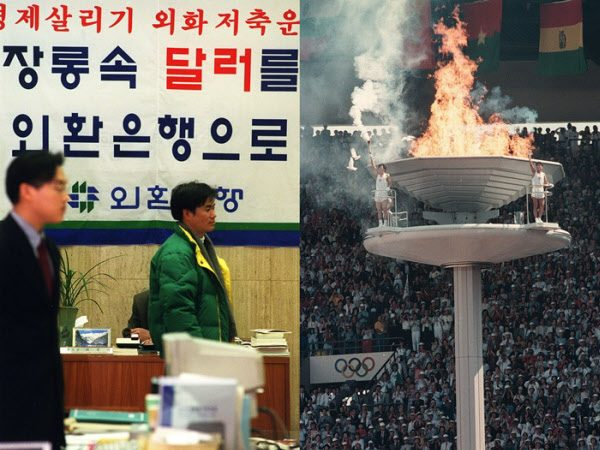
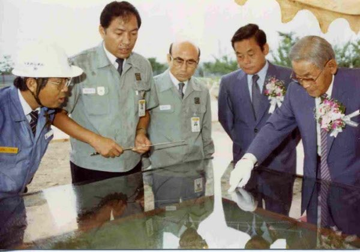
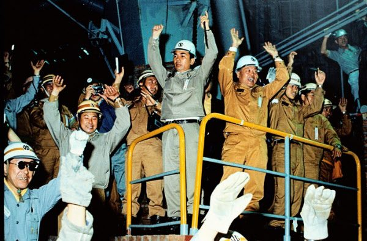

매체 조선일보보도일 2020-06-21
1위 삼성반도체 진출, 2위는 포항제철 설립
우리 국민들은 한국전 발발 후 지난 70년간 대한민국의 가장 큰 업적으로 경제·산업·사회 분야에서 각각 IMF 극복(52.1%)과 삼성의 반도체 진출(64.2%), 국민건강보험제도 실시(80.0%)를 꼽았다. 전국경제인연합회가 6·25 한국전쟁 70주년을 맞이하여 전국 18세 이상 남녀 1000명을 대상으로 ‘한국전쟁 70년, 대한민국을 만든 이슈 대국민 인식’을 조사한 결과, 우리 국민들은 한국이 선진국이라 느끼게 된 계기로 코로나19 K-방역(36.1%)을 1순위로 꼽았으며, 한국경제의 지속 성장을 위해 저출산·고령화 대응(28.3%)이 가장 필요하다고 응답했다. 전경련은 이번 조사에서 한강의 기적을 일군 경제적 성취, 글로벌 경쟁력을 갖춘 산업 발전, 국민의 삶의 질 제고 등 경제·산업·사회 분야에 걸쳐 오늘의 대한민국을 만든 이슈를 조사했다.
IMF외환위기 당시 모습(왼쪽)과 88 서울올림픽/조선일보 DB
경제 부문에서는 1953년 1인당 국민소득 76달러인 세계 최빈국에서 2019년 국민소득 3만불 이상, GDP 규모 세계 12위의 경제대국으로 성장한 것과 관련해 국민들은 IMF 외환위기 극복(52.1%)이 가장 기억에 남는다고 응답했다. 이어 88서울올림픽 개최(42.9%), 새마을운동(39.6%) 및 경제개발 5개년 계획(39.1%)을 꼽았다. 연령별로는 세대별 경험에 따른 순위차가 나타나, 20대~50대는 IMF 극복을 가장 기억에 남는다고 응답한 반면, 60대 이상에서는 경제개발 5개년 계획을 가장 많이 선택한 것으로 조사됐다.
1987년 삼성전자 반도체공장 3라인 기공식에 참석한 고 이병철(맨 오른쪽) 삼성그룹 창업자와 이건희(오른쪽에서 둘째) 회장
대한민국 산업 발전과 관련해 국민들이 가장 기억에 남는 이슈로 삼성 반도체 진출(64.2%)을 꼽았다.
1973년 '산업의 쌀' 국내 첫 생산 1973년 6월 9일 오전 포항 제1고로가 처음으로 쇳물을 쏟아내자 박태준(가운데) 당시 포항종합제철 사장과 임직원이 손을 번쩍 들고 만세를 부르고 있다
이어 포항제철 설립(35.9%), TV 세계시장 석권 등 디스플레이 강국(35.9%), 네이버·카카오 등 IT벤처 신화(33.9%) 순이었다. 연령별로는 20~30대에서는 삼성 반도체 진출에 이어 네이버·카카오 등 IT 벤처 신화, TV·디스플레이, 5G를 꼽은 반면, 60대는 삼성 반도체 진출에 이어 포항제철 설립, 현대중공업 조선소 설립 순으로 응답해, 2~3위권에서 연령대별 차이를 보였다.
사회 부문에서 국민들은 국민건강보험(80.0%)을 가장 기억에 남는 이슈로 꼽은 데 이어, 초·중등 무상교육(40.3%), 금융실명제 실시(39.5%), 국민연금제도 도입(39.4%) 순으로 응답했다. 국민건강보험제도를 선택한 비율은 연령대가 높아질수록 많았으며, 특히 60대 이상은 93.4%에 달한 것으로 나타났다. 경제·산업 부문과 달리 압도적으로 ‘국민건강보험제도 실시’(80.0%)를 꼽은 것은 올해 초 예기치 못한 코로나 팬데믹의 충격으로 질병과 의료에 대한 국민적 관심이 높아진 것에서 비롯된 것으로 전경련은 분석했다.
이번 조사에서 국민 83.9%는 우리나라를 선진국이라고 생각했고, 코로나19 K-방역(36.1%)이 그렇게 느끼게 된 가장 큰 계기였다고 응답했다. 이어, 1인당 국민소득 3만불-인구 5000만을 의미하는 ‘3050 클럽국 진입’ (15.2%)과 선진국들의 모임인 세계경제개발기구, ‘OECD 가입’(13.5%) 순으로 나타났다. 기타 응답으로는 안전한 치안과 높은 교육 수준 등이 있었다. 한편, 우리나라를 선진국이라고 생각하지 않는다는 응답도 16.1%에 달했다.
설문조사에 참여한 국민들은 국민소득 4만불 달성 등 한국경제의 지속적인 성장을 위해 ‘저출산․고령화 대응’(28.3%)이 가장 시급한 개선과제라고 응답했다. 이어 ‘일자리 창출’(23.0%)과 ‘차세대 반도체 등 미래 먹거리 산업 발굴’(16.8%) 순으로 꼽았다. 그밖에도 국가경쟁력을 강화하기 위해서는 ‘사회갈등 해소를 통한 사회통합’이 필요하다는 의견도 16.4%에 달했다. 연령대 및 지역별로는 30~50대와 대부분의 지역에서 ‘저출산․고령화 대응’을 가장 우선과제로 뽑은 반면, 20대와 부산·울산·경남 지역에서는 ‘일자리 창출’이 가장 시급하다고 응답했다.
응답자들은 한국의 미래 성장동력으로 육성해야할 산업으로 ‘신재생에너지’(20.0%)를 가장 많이 꼽았다. 이어 ‘인공지능’(16.2%), ‘바이오·헬스’(13.4%), ‘지능형 반도체’(13.3%) 순이었다. 응답자 특성별로는 남성은 ‘인공지능’을, 20대는 ‘5G 차세대통신’을 육성해야 한다는 의견이 가장 많았다.
김봉만 전경련 국제협력실장은 이번 국민 인식조사에 대해 “전쟁의 폐허에서 GDP 규모 세계 12위 경제대국으로 성장한 대한민국의 역사적 성취와 한국의 현재와 미래를 전망하고자 실시했다”고 말했다.
신은진 기자
출처 :
http://news.chosun.com/site/data/html_dir/2020/06/21/2020062100822.html



